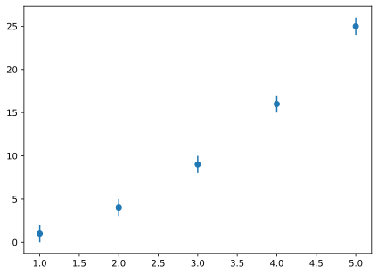

3 Il primo programma
Siamo pronti per partire con il nostro primo grafico. Leggete attentamente il frammento di codice che segue. (Notate che abbiamo aggiunto i numeri di linea all’inizio per poter commentare puntualmente, ma ovviamente questi non fanno parte del programma.)
Operativamente: copiate il testo del codice utilizzando la piccola icona in altro a destra, incollatelo nel vostro editor di testo (o IDE) preferito, ed eseguitelo. Dovreste vedere apparire sullo schermo qualcosa di simile alla figura qui sopra.
Se è così, congratulazioni! Avete appena eseguito il vostro primo programma degno di questo nome. In caso contrario, non perdetevi d’animo, ma cercate aiuto e non andate avanti fino a quando non avete superato questo piccolo ostacolo, perché questo è senza dubbio il gradino più alto di tutto il percorso. Forza!
3.1 Esegesi del primo programma
Se siete arrivate a questo punto, abbiamo a nostra disposizione un programma di \(13\) righe (\(10\), se non contiamo gli spazi bianchi) ed un grafico. Giusto per esercitare fin dall’inizio la nostra analogia tra programmazione e cucina, il programma è una sorta di ricetta che la nostra cuoca (il computer) utilizza per cucinare la portata finale pronta per il consumo—in questo caso, il grafico. Il primo obiettivo che ci poniamo, allora, è quello di capire per filo e per segno come si scrive una semplice ricetta.
Procederemo riga per riga, senza nessun particolare ordine logico se non quello con cui abbiamo scritto il programma, e nel processo introdurremo un certo numero di concetti fondamentali che riprenderemo più in profondità nel seguito. Prestate attenzione, perché alla fine di questa sezione vi sarete guadagnate la cintura bianca nella disciplina, e da lì in poi la strada è in discesa.
3.1.1 Importare moduli
Cosa diavolo significa la linea 1?
from matplotlib import pyplot as pltQuando lanciate l’interprete Python in modalità interattiva, l’insieme di cose che avete a disposizione è estremamente limitata—essenzialmente la sintassi del linguaggio ed un numero limitato di funzioni built-in. (Prendetevi un secondo per seguire il link e dare un’occhiata sommaria alla pagine, in modo da avere un’idea grossolana di cosa stiamo parlando—sono un centinaio di funzioni con nomi che vi sembreranno, per la maggio parte esotici.)
Se volete arrotondare un numero reale all’intero più vicino, ad esempio, non vi serve altro che il built-in round():
print(round(2.25))
print(round(2.75))2
3Oltre alle funzioni built-in, Python fornisce una libreria standard onnicomprensiva che, con ogni probabilità, copre una buona parte delle esigenze che avrete mai nella vostra carriera di fisiche. (Anche qui: prendetevi un attimo per seguire il link e dare una rapida occhiata alla documentazione della libreria standard: si tratta letteralmente di centinaia di moduli, ciascuno dei quali offre un numero variabile—spesso molte decine—di funzioni e strutture dati.)
Avete bisogno di funzioni trigonometriche, logaritmi ed esponenziali? Non ci sono problemi:
import math
print(math.log(10))
print(math.log10(10))
print(math.exp(2))
print(math.cos(0))2.302585092994046
1.0
7.38905609893065
1.0Equivalentemente (lo troverete spesso in giro, per cui tanto vale ingoiare subito la pillola) potete arrivare allo stesso risultato per una strada leggermente diversa
from math import log, log10, exp, cos
print(log(10))
print(log10(10))
print(exp(2))
print(cos(0))2.302585092994046
1.0
7.38905609893065
1.0La cosa fondamentale è che, in un caso o nell’altro, dovete importare la libreria math, o le funzioni al suo interno che volete utilizzare.
La parola speciale import di Python è quella che vi permette di importare moduli (o parti di moduli) che non sono disponibili all’avvio. Il sistema di import di Python è estremamente flessibile, e non è questo il momento di addentrarci nei meandri del suo funzionamento. Quando ne avrete bisogno, la documentazione è il posto giusto in cui guardare.
Se vi state chiedendo il perché di questa necessità apparentemente bizantina di importare le cose prima di poterle utilizzare (ma non avrebbe senso avere tutto a disposizione sin dall’inizio?), la risposta è semplice: importare un modulo costa tempo e, soprattutto, memoria. Sarebbe semplicemente folle importare l’intera libreria standard all’avvio di ogni sessione di Python, per poi lasciare inutilizzata la quasi totalità del suo contenuto—molto meglio un approccio di tipo opt in. D’altra parte in cucina non avete in ogni momento tutti gli ingredienti per tutte le ricette del mondo no? Magari avete sempre sale, pepe, farina, latte (i vostri built-in, in un certo senso), ma per tutto il resto lo prendete al supermercato all’occorrenza.
Arrivate a questo punto potreste avere l’impressione (sbagliata) che matplotlib sia parte delle libreria standard di Python—mentre invece si tratta di un pacchetto separato che è disponibile, insieme a quasi un milione di altri pacchetti, sul Python package index. Qual è la differenza? Semplice: la libreria standard viene istallata automaticamente quando istallate Python. Tutto il resto va istallato a mano, ad esempio con pip. (Ma se siete arrivate a questo punto dovreste esserci già passate.) Da questo punto in poi, non ci sono altre differenze—i moduli si importano esattamente allo stesso modo.
3.1.2 Commenti
Tempo di andare avanti. La linea 2 è stata lanciata intenzionalmente vuota, e non c’è molto da dire a proposito, a parte il fatto che potete lasciare tutte le linee vuote che volete. Sono semplicemente ignorate dall’interprete e non hanno nessun effetto, se non quello di aumentare la leggibilità del programma, se utilizzate opportunamente. Potete usarle, ad esempio, per separare tra loro sezioni di codice che sono logicamente distinte.
Siamo arrivati alla linea 3.
# Define the input data.Una linea preceduta da un carattere # si chiama commento (almeno in Python). Da un punto di vista del flusso del programma una linea di commento è identica ad una linea vuota, nel senso che è ignorata dall’interprete. Potete togliere tutti i commenti e, funzionalmente, il vostro programma rimane invariato.
A cosa serve un commento, allora? Beh, potete utilizzarlo per inserire nel programma qualsiasi informazione ancillare utile per fornire contesto o dare indicazioni sul programma stesso. Potete scrivere, ad esempio, a cosa serve la linea che segue il commento. O perché avete deciso di implementare un calcolo in un certo modo piuttosto che in un altro. Potete mettere un link alla pagina web in cui avete trovato il trucco che utilizzate due righe sotto per ottimizzare un passaggio. Oppure annotare le i valori delle misure che avete preso con la descrizione del setup di laboratorio. Siate creative—se dovesse capitarvi di rileggere il programma tra due mesi sarete grati a voi stesse per qualsiasi commento ragionevole.
Nota
Ogni linguaggio di programmazione ha il suo carattere (o insieme di caratteri) per identificare una linea di commento o delimitare un commento multi linea. Python interpreta come commento una linea (o porzione di linea) singola che inizia con un cancelletto (#) o qualsiasi cosa tra due gruppi si tre apici ("""). In C e C++ i commenti iniziano con un doppio slash (//). In LaTeX con %. La lista potrebbe essere arbitrariamente lunga…
3.1.3 Variabili
Con le linee 4, 5 e 6 entriamo nel vivo. Sono tutte simili, per cui è sufficiente analizzare la prima
x = [1, 2, 3, 4, 5]Cosa sta succedendo? Due cose distinte, entrambi importanti:
- stiamo chiedendo all’interprete Python di creare un oggetto in memoria—una collezione di numeri o, più precisamente, una lista di numeri;
- stiamo associando il nome
xall’oggetto appena creato.
Da questo punto in poi possiamo riferirci all’oggetto (in questo caso la nostra lista) con il nome x ogni volta che ci serve. A volte, e con un leggero abuso di notazione, il nome x viene anche detto variabile; è un piccolo abuso che faremo spesso anche noi.
Quello che rende possibile il tutto è l’operatore di assegnamento =, che fa il binding tra l’oggetto ed il nome. Non fatevi ingannare perché la cosa è solo apparentemente semplice. L’operatore di assegnamento assomiglia solo superficialmente all’operatore binario con lo stesso simbolo a cui siete abituate dall’aritmetica elementare. Ci torneremo in seguito, e ci prenderemo tutto il tempo che serve, ma siete avvertite!
3.1.4 Moduli e funzioni
Siamo quasi alla fine del nostro viaggio inaugurale—ci mancano le linee 9, 10 e 13, e al solito le esaminiamo una per una.
plt.figure("scatter plot")Andiamo per ordine. Il comando inizia con plt, che è il nome con il quale abbiamo importato il modulo pyplot della libreria matplotlib. Fate bene attenzione a come abbiamo chiamato le cose, perché l’ordine gerarchico è importante:
- matplotlib è una libreria di visualizzazione scritta in Python;
- pyplot è un modulo Python che fa parte della libreria
matplotlib; - figure è una funzione fornita dal modulo
pyplotdella libreriamatplotlib.
Avremo tutto il tempo per capire in dettaglio il significato di questi termini che abbiamo appena introdotto, ma giusto per non brancolare nel buio:
- per “libreria”, in questo contesto, si intende genericamente una collezione di programmi, tipicamente collegati organicamente tra di loro, che può essere utilizzata, magari insieme ad altre librerie, per creare nuovi programmi;
- per “modulo”, all’ordine zero, si intende un singolo file Python che contiene codice che può essere importato e riutilizzato in altri file Python (quindi, in senso lato, possiamo vedere una libreria come una collezione di moduli);
- per “funzione” si intende una sequenza di istruzioni con uno scopo preciso che può essere riutilizzata da un altro programma (e, va da sé, un modulo può contenere, tra le altre cose, un numero arbitrario di funzioni).
In Python il carattere . ha un significato molto speciale, perché è utilizzato, tra le altre cose, per accedere un nome (ad esempio una funzione) definita dentro un modulo. Quindi plt.figure potrebbe essere tradotto grossolanamente come “la funzione figure definita nel modulo plt, che nel nostro caso è semplicemente una sorta di soprannome con cui identifichiamo il modulo pyplot della libreria matplotlib”. Wow—tanto baccano per nulla.
Ma cosa fa, esattamente, la funzione figure? Niente di più semplice—basta leggere la documentazione per scoprirlo. In breve: crea una nuova figura, una sorta di canvas (i.e., una tela da pittore) sulla quale possiamo poi disegnare quel che vogliamo. (Ci torniamo tra un attimo). Più precisamente, il nostro comando crea una figura dal titolo (o meglio, dall’identificatore univoco) “scatter plot”.
Nota
Ok, in quest’ultima frase ho peccato di imprecisione e forse vale la pena fare ammenda subito. In matplotlib potete iniziare a disegnare anche senza creare una figura; in tal caso il sistema ne crea per voi una di default non appena serve. Lavorare in questo modo non è una buona pratica, perché da questo punto in poi matplotlib continua a disegnare sulla stessa figura fino a che non ne create esplicitamente un’altra. In altre parole: se create due grafici, finiscono uno sull’altro, che può essere o no quello che volete, a seconda della situazione. Se invece crete sempre le vostre figure, controllate per definizione dove state disegnando, e minimizzate la possibilità di confusione.
E con questo è arrivato il momento di passare alla riga 10.
plt.errorbar(x, y, dy, fmt="o")Mhh… questa ha l’aria di essere importante, non è vero? Ormai abbiamo capito l’arcano: stiamo chiamando la funzione errorbar del modulo pyplot della libreria matplotlib. Cosa fa? Documentazione! In breve: questo crea (nel senso che lo disegna sulla figura che abbiamo appena creato) un grafico di dispersione in cui le liste di numeri x e y rappresentano le posizioni dei punti, e dy le barre d’errore sull’asse delle ordinate. x, y e dy, vale la pena ripeterlo, sono le variabili che abbiamo creato alle righe 4–6. Avevamo detto che ci sarebbero servite, ed eccoci qua a chiamarle per nome.
Nota
Con ogni probabilità c’è un certo numero di domande che ci state facendo. Cosa sono tutte queste cose che metto tra parentesi tonde dopo il nome della funzione? Come faccio a sapere che che a figure devo passare l’identificatore della figura, mentre errorbar vuole coordinate dei punti ed errori? (Questo è facile documentazione.) L’ordine con cui metto le cose conta? (Spoiler alert: dipende.) Che cosa vuol dire questa strana scrittura fmt="o"? Ottime domande, e abbiamo un briciolo di pazienza, perché ci torneremo tra pochissimo.
Siamo ormai giunti al termine, ma c’è un ultimo elemento di suspence nella storia, perché senza la linea 13
plt.show()non succederebbe nulla. figure crea una tela su cui disegnare; errorbar disegna fisicamente un grafico di dispersione su questa tela; ma sullo schermo non appare niente fino a che non chiamate la funzione show.
Nota
Perché secondo voi matplotlib ci obbliga a questa ultima chiamata di funzione? Se creo un scatter plot non è ovvio che voglio vederlo sullo schermo? La risposta, se ci pensate un attimo, è “no”. Solo per fare un esempio, potrei voler salvare il grafico su file senza vederlo. Ma la cosa veramente importante è che la funzione show ha una peculiarità che non avevamo ancora incontrato: è bloccante (o blocking in inglese). Quando la chiamate il normale flusso del programma si interrompe e non riprende fino a che non avete chiuso tutte le finestre grafiche che ha creato sullo schermo. Usatela con parsimonia, e sempre alla fine del vostro programma.
3.1.5 Variazioni sul tema
Bene, siamo giunti alla fine del primo capitolo. Se siete arrivate fin qui leggendo con attenzione e seguendo i consiglio, dovreste avere davanti a voi il vostro primo, glorioso grafico realizzato in Python.
Prima di addentrarvi nel contenuto dei prossimi capitoli, in cui riprenderemo molti tra i concetti che abbiamo appena introdotto e cercheremo di sviscerarli in modo un pochino più approfondito, prendetevi qualche minuto per sperimentare con qualche variazione sul tema. Piccola lista (non esaustiva) di suggerimenti:
- cambiate i valori centrali dei punti e/o le barre d’errore e vedete cosa succede;
- provate a togliere la parte
, fmt="o"dalla chiamata alla funzioneerrorbar; - provate a sostituire
fmt="o"confmt="v"; - leggete le note in questa pagina e sbizzarritevi con tutte le opzioni disponibili per
fmt; - provate ad aggiungere delle etichette di testo con nome della quantità ed unità di misura sui due assi (suggerimento: usate xlabel e ylabel).
E, sopratutto: non ponetevi limiti se non la vostra fantasia. Pensate a come vorreste far apparire il vostro grafico ed esplorate la documentazione di matplotlib per tradurre la vostra visione in pratica.